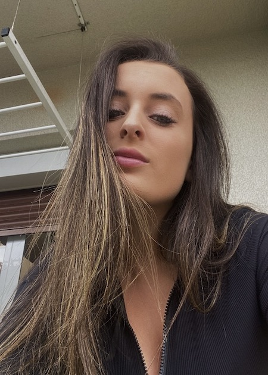

Andrea Ferreiro
Con 21 años tengo experiencia en varios campos laborales como la hostelería y el comercio. Además he completado tres años del grado de Psicología por la UNED, el cual no me terminó de llenar. Con este curso me gustaría encauzar mi futuro dentro del mundo de la programación, el cual me llama mucho la atención.